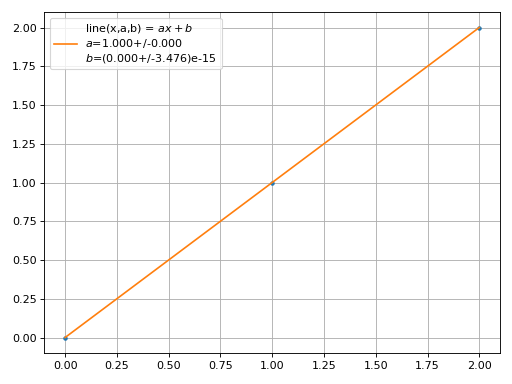

smpl.plot¶
Simplified plotting.
Submodules¶
Package Contents¶
Functions¶
|
Automatically loop over functions and fit the best one. |
|
Plot datay against datax via |
|
Fit and plot function to datax and datay. |
|
Plot function |
|
Set default plot_kwargs if not set. |
|
Set default plot2d_kwargs if not set. |
Attributes¶
- smpl.plot.auto(*adata, funcs=None, **kwargs)[source]¶
Automatically loop over functions and fit the best one.
Parameters¶
- funcsfunction array
functions to consider as fit. Default all
smpl.functions.- **kwargsoptional
see
plot_kwargs().
Returns¶
The best fit function and it’s parameters. Also a lambda function where the parameters are already applied.
- smpl.plot.data(*data, function=None, **kwargs)[source]¶
Plot datay against datax via
fit()Parameters¶
- dataxarray_like
X data either as
unp.uarrayornp.arrayorlist- datayarray_like
Y data either as
unp.uarrayornp.arrayorlist- functionfunc,optional
Fit function with parameters:
x,params- **kwargsoptional
see
plot_kwargs().
Returns¶
- array_like
Optimized fit parameters of
functiontodataxanddatay
- smpl.plot.fit(func, *adata, **kwargs)[source]¶
Fit and plot function to datax and datay.
Parameters¶
- dataxarray_like
X data either as
unp.uarrayornp.arrayorlist- datayarray_like
Y data either as
unp.uarrayornp.arrayorlist- functionfunc
Fit function with parameters:
x,params- **kwargsoptional
see
plot_kwargs().
Fit parameters can be fixed via
kwargseg.a=5.Returns¶
- array_like
Optimized fit parameters of
functiontodataxanddatay. Ifdatayis complex, both the real and imaginary part are returned.
Examples¶
>>> from smpl import functions as f >>> from smpl import plot >>> param = plot.fit([0,1,2],[0,1,2],f.line) >>> plot.unv(param).round()[0] 1.0
(Source code, png, hires.png, pdf)

{kind=link}
{kind=link}
- smpl.plot.function(func, *args, **kwargs)[source]¶
Plot function
funcbetweenxminandxmaxParameters¶
- funcfunction
Function to be plotted between
xminandxmax, only taking array_likexas parameter- *argsoptional
arguments for
func- **kwargsoptional
see
plot_kwargs().
- smpl.plot.plot2d(datax, datay, dataz, **kwargs)¶
Creates a 2D-Plot.
Parameters¶
- **kwargsoptional
see
plot2d_kwargs().